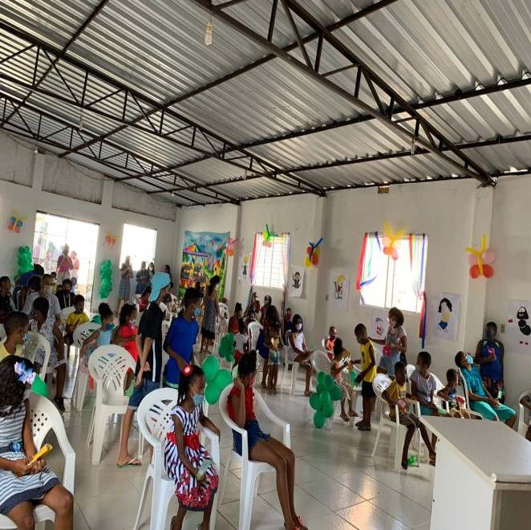
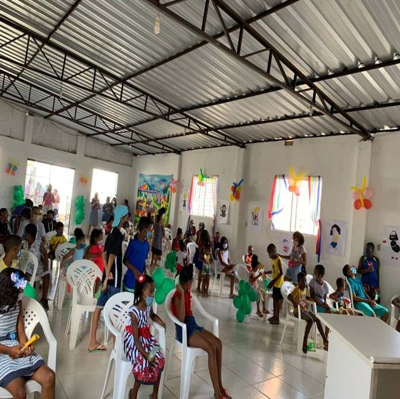

GRUPO INFANTIL: AMIGOS DE DEUS
"Então disse Jesus: "Deixem vir a mim as crianças e não as impeçam; pois o Reino dos céus pertence aos que são semelhantes a elas". Mateus 19:14
Realizamos Ensinos Bíblicos: Escola Bíblica Dominical Infantil todo domingo das 18H às 19H45 em um espaço reservado na igreja, destinado às crianças.
Equipe responsável (professores e monitores): Cristina Esquivel, Rebeca Galvão, Rebeca da Silva, Jhonatas de Souza e Luiza.
Colaboradores: Todos os irmãos da igreja são os nossos colaboradores e apoiadores desse projeto de ensino bíblico para às crianças.
SOMOS PESSOAS QUE TRANSMITEM O MELHOR DESSA VIDA PARA SUAS CRIANÇAS: O AMOR DO NOSSO DEUS
.jpg) 

Dividimos os conteúdos de ensino por Trimestres. E, ao final de cada 3 meses, realizamos um Culto Especial Infantil (o dia de sábado reservado para às crianças da igreja, os seus pais, os irmãos da igreja, às crianças do setor e toda a comunidade local).
O Conteúdo geral do I Trimestre desse ano (2022) foi baseado no Novo Testamento. Desde o nascimento de Jesus, milagres e parábolas de Jesus, até a sua ressurreição.
E o tema do nosso culto foi: "Quem é Jesus?" Mas antes tivemos um culto introdutório do ano, cujo tema foi: "A Palavra do Senhor é Doce!!"
O conteúdo desse II Trimestre está sendo: Antigo Testamento com ênfase em: "Pessoas como nós, os Heróis da Fé", desde a criação do mundo até a história de Daniel e seus amigos.
Todos os domingos realizamos esse ensino bíblico. Uma história a cada domingo.
.jpg)
.jpg)
Temos uma sequência pedagógica do processo de aprendizagem e integração com as crianças: Oração inicial, momento conversa, momento da aula (bíblia, dinâmicas, fantoches, interpretações e outros métodos de ensino), brincadeira do dia (que envolva habilidades pessoais voltadas ao melhor aprendizado da criança com objetivo de aplicação pessoal no seu cotidiano), momento dinâmico, momento do lanche, momento da música do dia (louvor que seja sobre o ensino do dia), momento dos pedidos de oração e a oração final.
Temos dois grupos de acompanhamento, de monitoria no whatsapp. Um dos pais e responsáveis e um com algumas crianças (as maiores de 7 anos que têm autorização dos pais). Nesses grupos, compartilhamos todo o nosso trabalho desenvolvido e mantemos uma comunicação à distância com os mesmos, fora o contato presencial na nossa igreja local.
O nosso intuito é compartilhar um pouco do amor do nosso Deus para os pequeninos, de uma forma que todos os ensinamentos sejam bíblicos e transmitidos de uma maneira dinâmica, leve e sábia!! É muito mais que um grupo, é uma família que ama servir a Cristo.
"Todos os seus filhos serão ensinados pelo Senhor, e grande será a paz de suas crianças." Isaías 54:13